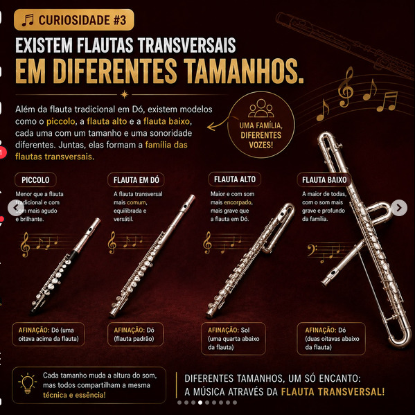
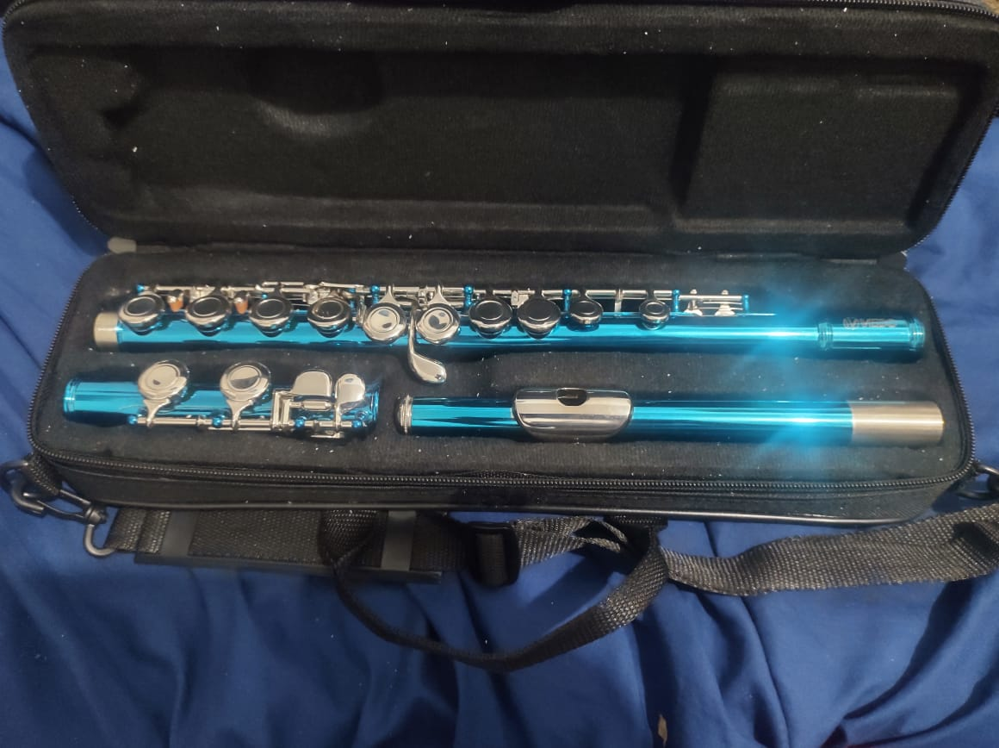

"Quando meus lábios encontram a flauta e meu sopro se transforma em música,
descubro que não estou apenas aprendendo a tocar um instrumento:
estou aprendendo uma nova maneira de me expressar."

A história da flauta : dos instrumentos primitivos à flauta transversal moderna A história da flauta começou há milhares de anos, na Pré-História. Os primeiros instrumentos semelhantes a flautas eram feitos de ossos de animais, madeira e outros materiais naturais. Um dos exemplares mais antigos encontrados foi descoberto na Alemanha e tem aproximadamente 35 mil a 40 mil anos. Com o desenvolvimento das civilizações, diferentes povos, como egípcios, gregos e romanos, utilizaram instrumentos de sopro em cerimônias, festas e apresentações musicais. Ao longo dos séculos, surgiram diferentes tipos de flautas, entre elas a flauta doce, que ganhou destaque na Europa durante a Idade Média e o Renascimento. A flauta doce possui um bocal que direciona o ar para produzir o som. Já a flauta transversal é tocada lateralmente, soprando-se contra a borda de um orifício. Embora sejam diferentes, ambas permitem executar diversas melodias e fazem parte da história da música.
A flauta transversal ganhou importância na música europeia a partir do século XVI e se tornou um instrumento muito utilizado durante os séculos XVII e XVIII. Compositores como Johann Sebastian Bach e Wolfgang Amadeus Mozart escreveram obras importantes para esse instrumento. No século XIX, o músico e inventor alemão Theobald Boehm revolucionou a construção da flauta transversal
. Ele desenvolveu um sistema de furos e chaves que melhorou a afinação e facilitou a execução das notas, estabelecendo as bases da flauta transversal moderna. Atualmente, a flauta transversal é utilizada em orquestras, bandas, música popular e diversos outros estilos musicais.
Apesar de ser geralmente fabricada em metal, pertence tradicionalmente à família dos instrumentos de sopro de madeira. Seu som pode ser suave, delicado ou brilhante, dependendo da técnica do músico. Em resumo, a flauta evoluiu de instrumentos primitivos feitos de materiais naturais até os modelos modernos, com mecanismos sofisticados e grande capacidade musical.
Ao aprender flauta transversal, damos continuidade a uma tradição milenar que demonstra como o ser humano transformou o simples ato de soprar em uma das mais belas formas de expressão artística: a música. 🎵"No século XIX, o músico e inventor alemão Theobald Boehm revolucionou a construção da flauta transversal. Ele desenvolveu um sistema de furos e chaves que melhorou a afinação e facilitou a execução das notas, estabelecendo as bases da flauta transversal moderna."
A flauta é um dos instrumentos musicais mais antigos do mundo, existindo há milhares de anos e sendo inicialmente fabricada com materiais como ossos e madeira. 🎶 A flauta transversal moderna geralmente é feita de metal, não possui palheta e produz som quando o músico direciona o ar contra a borda do bocal. 🌬️ O flautim (piccolo) é menor que a flauta transversal e produz sons mais agudos, sendo utilizado em orquestras, bandas e diversos estilos musicais.
| Ordem | Instrumento | Período histórico | Características |
|---|---|---|---|
| 1 | Flauta de osso pré-histórica | Há aproximadamente 35 a 40 mil anos | Feita de ossos de animais e considerada um dos instrumentos musicais mais antigos já encontrados. |
| 2 | Flautas da Antiguidade | Antiguidade | Fabricadas com materiais como madeira e cana, eram utilizadas por diferentes civilizações. |
| 3 | Flauta de Pã | Antiguidade e diferentes tradições históricas | Formada por tubos de diferentes comprimentos, produz notas musicais de diferentes alturas. |
| 4 | Flauta doce | Idade Média e Renascimento | Possui um bocal com canal de ar e é bastante utilizada no ensino musical. |
| 5 | Flauta transversal barroca | Séculos XVII e XVIII | Geralmente feita de madeira, era tocada lateralmente e possuía menos chaves que os modelos modernos. |
| 6 | Flauta com sistema Boehm | Século XIX | O sistema desenvolvido por Theobald Boehm aperfeiçoou a disposição dos furos e o mecanismo de chaves. |
| 7 | Flauta transversal moderna | Séculos XIX a XXI | Geralmente fabricada em metal, é utilizada em orquestras, bandas e diversos estilos musicais. |
| 8 | Flautim (Piccolo) | Desenvolvimento histórico ao longo dos séculos | Menor que a flauta transversal, produz sons mais agudos e é utilizado principalmente em bandas e orquestras. |
| 9 | Flauta japonesa Shakuhachi | Tradição japonesa histórica | Tradicionalmente feita de bambu, é tocada soprando contra a borda de sua extremidade. |

Essa é minha